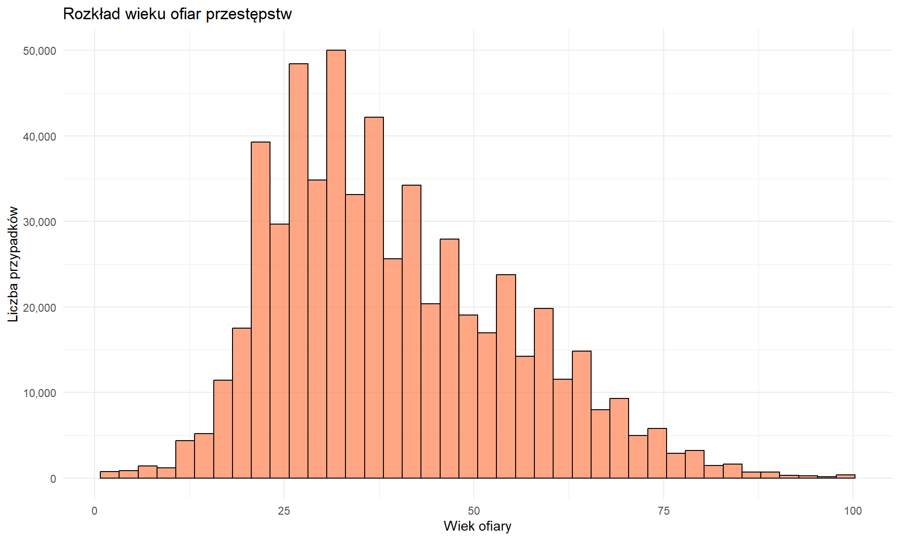

Analiza przestępczości w Los Angeles (2020-present)
Last updated: 2026-01-16
Checks: 6 1
Knit directory: projekt/
This reproducible R Markdown analysis was created with workflowr (version 1.7.2). The Checks tab describes the reproducibility checks that were applied when the results were created. The Past versions tab lists the development history.
The R Markdown file has staged changes. To know which version of the
R Markdown file created these results, you’ll want to first commit it to
the Git repo. If you’re still working on the analysis, you can ignore
this warning. When you’re finished, you can run
wflow_publish to commit the R Markdown file and build the
HTML.
Great job! The global environment was empty. Objects defined in the global environment can affect the analysis in your R Markdown file in unknown ways. For reproduciblity it’s best to always run the code in an empty environment.
The command set.seed(20260115) was run prior to running
the code in the R Markdown file. Setting a seed ensures that any results
that rely on randomness, e.g. subsampling or permutations, are
reproducible.
Great job! Recording the operating system, R version, and package versions is critical for reproducibility.
Nice! There were no cached chunks for this analysis, so you can be confident that you successfully produced the results during this run.
Great job! Using relative paths to the files within your workflowr project makes it easier to run your code on other machines.
Great! You are using Git for version control. Tracking code development and connecting the code version to the results is critical for reproducibility.
The results in this page were generated with repository version 59b55af. See the Past versions tab to see a history of the changes made to the R Markdown and HTML files.
Note that you need to be careful to ensure that all relevant files for
the analysis have been committed to Git prior to generating the results
(you can use wflow_publish or
wflow_git_commit). workflowr only checks the R Markdown
file, but you know if there are other scripts or data files that it
depends on. Below is the status of the Git repository when the results
were generated:
Ignored files:
Ignored: .Rhistory
Ignored: .Rproj.user/
Ignored: analysis/.Rhistory
Staged changes:
New: analysis/Analiza.Rmd
New: analysis/CV.html
Modified: analysis/_site.yml
Modified: analysis/about.Rmd
New: analysis/assets/uniwersytet.jpg
New: analysis/cv.Rmd
Modified: analysis/index.Rmd
New: crime_data_sample.csv
Note that any generated files, e.g. HTML, png, CSS, etc., are not included in this status report because it is ok for generated content to have uncommitted changes.
There are no past versions. Publish this analysis with
wflow_publish() to start tracking its development.
Opis danych
Zbiór danych który będę analizował pochodzi z Los Angeles Police Department (LAPD) i zawiera informacje o zgłoszonych przestępstwach od 2020 roku do 2025 roku. Jest to oficjalny zbiór udostępniany publicznie przez miasto Los Angeles.
Źródło danych: data.lacity.org
library(dplyr)
library(ggplot2)
# Wczytanie danych
crime_data <- read.csv("crime_data_sample.csv")
#crime_data <- read.csv("Crime_Data_from_2020_to_Present.csv")
# Ze względu na ogromny rozmiar danych (250mb) który przekracza limit 1 pliku na githubie 100mb zdecydowałem się pobrać losową próbkę 80% danych i jedynie 5 kolumn, które będę analizował. Analizę przeprowadziłem też dla pełnego zbioru i wyniki były mocno zbliżone.
#set.seed(123)
#crime_sample <- crime_data %>%
# sample_frac(0.8) %>% # 80% danych
# select(
# AREA.NAME,
# Crm.Cd.Desc,
# Vict.Age,
# Vict.Sex,
# TIME.OCC
# )
#write.csv(crime_sample, "crime_data_sample.csv", row.names = FALSE)
# Sprawdzenie rozmiaru danych
cat("Początkowy rozmiar danych:", nrow(crime_data), "wierszy,", ncol(crime_data), "kolumn\n")Początkowy rozmiar danych: 803993 wierszy, 5 kolumncat("Całkowita liczba komórek:", nrow(crime_data) * ncol(crime_data), "\n")Całkowita liczba komórek: 4019965 Czyszczenie i przygotowanie danych do analizy
# Wybieram tylko istotne kolumny - redukujemy liczbę kolumn z 28 do 5 (W danych są kolumny typu description - w większości puste, więc nie są potrzebne do analizy), ten fragment nie jest istotny w przypadku analizy okrojonego zbioru, ponieważ w moim okrojonym zbiorze już wybrałem tylko 5 kolumn, co pokazałem wcześniej.
crime_clean <- crime_data %>%
select(
AREA.NAME, # Dzielnica
Crm.Cd.Desc, # Typ przestępstwa
Vict.Age, # Wiek ofiary
Vict.Sex, # Płeć ofiary
TIME.OCC # Godzina
)
cat("Po wyborze kolumn:", nrow(crime_clean), "wierszy,", ncol(crime_clean), "kolumn\n")Po wyborze kolumn: 803993 wierszy, 5 kolumn# Usunięcie wierszy z brakującymi danymi w kluczowych kolumnach
crime_clean <- crime_clean %>%
filter(
!is.na(AREA.NAME),
!is.na(Crm.Cd.Desc),
AREA.NAME != "",
Crm.Cd.Desc != ""
) %>%
# Przetworzenie czasu
mutate(
hour = TIME.OCC %/% 100, # Wyciągnięcie godziny z formatu HHMM
# Kategoryzacja pory dnia
time_of_day = case_when(
hour >= 6 & hour < 12 ~ "Rano",
hour >= 12 & hour < 18 ~ "Popoludnie",
hour >= 18 & hour < 24 ~ "Wieczor",
TRUE ~ "Noc"
)
) %>%
# Usunięcie nietypowych wartości wieku (zostawiamy tylko sensowne)
filter(Vict.Age > 0, Vict.Age < 120)
cat("Po czyszczeniu:", nrow(crime_clean), "wierszy\n")Po czyszczeniu: 588513 wierszycat("Usunięto", nrow(crime_data) - nrow(crime_clean), "wierszy\n")Usunięto 215480 wierszycat("Redukcja komórek:",
(nrow(crime_data) * ncol(crime_data) - nrow(crime_clean) * ncol(crime_clean)),
"komórek\n")Redukcja komórek: -99626 komórekPodstawowe statystyki
# Najczęstsze typy przestępstw
top_crimes <- crime_clean %>%
count(Crm.Cd.Desc, sort = TRUE) %>%
head(10)
print(top_crimes) Crm.Cd.Desc n
1 BATTERY - SIMPLE ASSAULT 59023
2 BURGLARY FROM VEHICLE 49304
3 THEFT OF IDENTITY 49117
4 ASSAULT WITH DEADLY WEAPON, AGGRAVATED ASSAULT 41266
5 THEFT PLAIN - PETTY ($950 & UNDER) 37664
6 VANDALISM - FELONY ($400 & OVER, ALL CHURCH VANDALISMS) 37266
7 INTIMATE PARTNER - SIMPLE ASSAULT 36718
8 BURGLARY 31692
9 THEFT FROM MOTOR VEHICLE - GRAND ($950.01 AND OVER) 28205
10 THEFT-GRAND ($950.01 & OVER)EXCPT,GUNS,FOWL,LIVESTK,PROD 22158# Statystyki według dzielnic
area_stats <- crime_clean %>%
group_by(AREA.NAME) %>%
summarise(
liczba_przestepstw = n(),
sredni_wiek_ofiary = round(mean(Vict.Age, na.rm = TRUE), 1)
) %>%
arrange(desc(liczba_przestepstw)) %>%
head(10)
print(area_stats)# A tibble: 10 × 3
AREA.NAME liczba_przestepstw sredni_wiek_ofiary
<chr> <int> <dbl>
1 Central 41854 38
2 Southwest 38304 35.7
3 77th Street 36892 38.6
4 Pacific 33732 41
5 Hollywood 31542 37.8
6 Southeast 29272 37.9
7 Olympic 28953 38.7
8 N Hollywood 28896 40.3
9 Wilshire 28556 39.8
10 Topanga 27466 41.4Wizualizacje
Wykres 1: Top 10 najczęstszych przestępstw
top_10_crimes <- crime_clean %>%
count(Crm.Cd.Desc, sort = TRUE) %>%
head(10) %>%
mutate(Crm.Cd.Desc = reorder(Crm.Cd.Desc, n))
ggplot(top_10_crimes, aes(x = Crm.Cd.Desc, y = n, fill = Crm.Cd.Desc)) +
geom_col() +
coord_flip() +
labs(
title = "Top 10 najczęstszych przestępstw w Los Angeles",
x = "Typ przestępstwa",
y = "Liczba zgłoszeń"
) +
theme_minimal() +
theme(legend.position = "none") +
scale_y_continuous(labels = scales::comma)
Interpretacja: Kradzież tożsamości i kradzież pojazdów to najczęściej zgłaszane przestępstwa w LA. Dominują przestępstwa majątkowe.
Wykres 2: Przestępstwa według pory dnia
time_crimes <- crime_clean %>%
count(time_of_day) %>%
mutate(time_of_day = factor(time_of_day,
levels = c("Rano", "Popoludnie", "Wieczor", "Noc")))
ggplot(time_crimes, aes(x = time_of_day, y = n, fill = time_of_day)) +
geom_col() +
labs(
title = "Rozkład przestępstw według pory dnia",
x = "Pora dnia",
y = "Liczba przestępstw"
) +
theme_minimal() +
theme(legend.position = "none") +
scale_y_continuous(labels = scales::comma)
Interpretacja: Najwięcej przestępstw ma miejsce w ciągu dnia - popołudniu i rano. Najmniej przestępstw odnotowuje się w nocy, co może być związane z mniejszą aktywnością ludzi.
Wykres 3: Dzielnice z największą przestępczością
top_areas <- crime_clean %>%
count(AREA.NAME, sort = TRUE) %>%
head(10) %>%
mutate(AREA.NAME = reorder(AREA.NAME, n))
ggplot(top_areas, aes(x = AREA.NAME, y = n, fill = AREA.NAME)) +
geom_col() +
coord_flip() +
labs(
title = "Dzielnice Los Angeles z największą liczbą przestępstw",
x = "Dzielnica",
y = "Liczba zgłoszeń"
) +
theme_minimal() +
theme(legend.position = "none") +
scale_y_continuous(labels = scales::comma)
Interpretacja: Central (centrum miasta), 77th Street i Pacific to dzielnice o najwyższej przestępczości. Może to wynikać z większej gęstości zaludnienia i charakteru obszarów miejskich.
Dodatkowa analiza: Rozkład wieku ofiar
# Statystyki wieku
age_stats <- crime_clean %>%
filter(!is.na(Vict.Age)) %>%
summarise(
srednia = round(mean(Vict.Age), 1),
mediana = median(Vict.Age),
min = min(Vict.Age),
max = max(Vict.Age)
)
print(age_stats) srednia mediana min max
1 39.5 37 2 99crime_clean %>%
filter(!is.na(Vict.Age)) %>%
ggplot(aes(x = Vict.Age)) +
geom_histogram(bins = 40, fill = "coral", color = "black", alpha = 0.7) +
labs(
title = "Rozkład wieku ofiar przestępstw",
x = "Wiek ofiary",
y = "Liczba przypadków"
) +
theme_minimal() +
scale_y_continuous(labels = scales::comma)
Interpretacja: Średni wiek ofiary to około 39-40 lat. Najwięcej ofiar ma od 25 do 50 lat, co może być pośrednio związane z większą aktywnością tej grupy wiekowej w życiu publicznym i zawodowym.
Podsumowanie
Analiza danych o przestępczości w Los Angeles wykazała, że:
- Najczęstsze przestępstwa to kradzieże tożsamości i pojazdów
- Pora dnia: Większość przestępstw ma miejsce w ciągu dnia (popołudnie i rano)
- Dzielnice: Centrum miasta i 77th Street to obszary o najwyższej przestępczości
- Ofiary: Średni wiek ofiary to około 39-40 lat
sessionInfo()R version 4.5.2 (2025-10-31 ucrt)
Platform: x86_64-w64-mingw32/x64
Running under: Windows 11 x64 (build 26200)
Matrix products: default
LAPACK version 3.12.1
locale:
[1] LC_COLLATE=English_United Kingdom.utf8
[2] LC_CTYPE=English_United Kingdom.utf8
[3] LC_MONETARY=English_United Kingdom.utf8
[4] LC_NUMERIC=C
[5] LC_TIME=English_United Kingdom.utf8
time zone: Europe/Warsaw
tzcode source: internal
attached base packages:
[1] stats graphics grDevices utils datasets methods base
other attached packages:
[1] ggplot2_4.0.1 dplyr_1.1.4
loaded via a namespace (and not attached):
[1] gtable_0.3.6 jsonlite_2.0.0 compiler_4.5.2 promises_1.5.0
[5] tidyselect_1.2.1 Rcpp_1.1.1 stringr_1.6.0 git2r_0.36.2
[9] later_1.4.5 jquerylib_0.1.4 scales_1.4.0 yaml_2.3.12
[13] fastmap_1.2.0 R6_2.6.1 labeling_0.4.3 generics_0.1.4
[17] workflowr_1.7.2 knitr_1.51 tibble_3.3.1 rprojroot_2.1.1
[21] RColorBrewer_1.1-3 bslib_0.9.0 pillar_1.11.1 rlang_1.1.7
[25] utf8_1.2.6 cachem_1.1.0 stringi_1.8.7 httpuv_1.6.16
[29] xfun_0.55 S7_0.2.1 fs_1.6.6 sass_0.4.10
[33] otel_0.2.0 cli_3.6.5 withr_3.0.2 magrittr_2.0.4
[37] digest_0.6.39 grid_4.5.2 rstudioapi_0.17.1 lifecycle_1.0.5
[41] vctrs_0.6.5 evaluate_1.0.5 glue_1.8.0 farver_2.1.2
[45] rmarkdown_2.30 tools_4.5.2 pkgconfig_2.0.3 htmltools_0.5.9